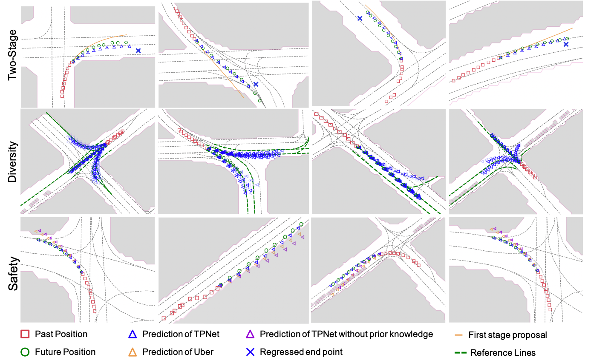

The movements of traffic agents are often regularized by the movable areas,
while there might be multiple plausible future paths for the agents.
Based on these prior knowledge, we propose a novel two-stage motion prediction framework, called TPNet,
both for vehicles and pedestrians.
By steering the proposal generation process, safe and multimodal predictions are realized.
More importantly, the two-stage pipeline is flexible to encode different prior knowledge into the deep learning method.
Results
We show the effectiveness of two-stage pipeline, diversity, safety.

Check more results in the following video.
Bibtex
@inproceedings{fang2020,
title = {Trajectory Proposal Network for Safe and Multimodal Motion Prediction},
author = {Liangji Fang, Qinhon Jiang, Jianping Shi, Bolei Zhou},
booktitle = {CVPR},
year = {2020}
}